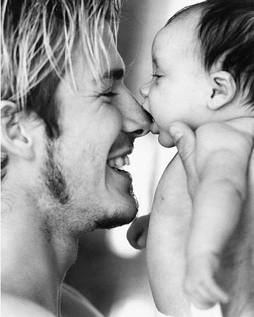
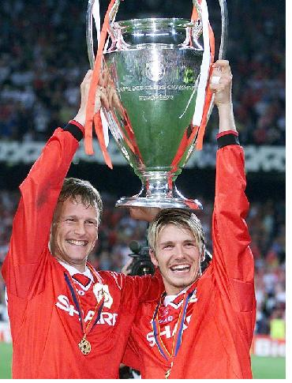

Chương Tám

rên chuyến bay từ Mỹ về London, tiếp viên trưởng ghé tai David Beckham, thông báo:
-Khi chúng ta hạ cánh, sẽ có cảnh sát chờ anh ngoài cửa.
David tưởng người tiếp viên đùa. Cảnh sát để làm gì? Bắt mình à? Mình tội chi mà bắt? Bảo vệ mình ư? Chẳng lẽ bọn hooligan định giết mình thật? Nhưng người tiếp viên nói đúng, lúc đến nơi, quả thật có 5, 6 cảnh sát viên đợi sẵn, hộ tống David ra xe. Sự có mặt của họ không thừa chút nào, vì khi vừa bước ra khỏi ga, hàng đàn hàng lũ phóng viên ngay lập tức xông tới. Nếu không có cảnh sát dẹp đường, David không sao thoát được vòng vây.
Những ngày đầu về nước, David đi đâu cũng phải đeo kính đen, đội mũ sùm sụp, vậy mà vẫn bị nhận ra. Có lần đi ăn cùng người bạn Dave Gardner, vừa ngồi xuống thì các thực khách khác nhìn anh chằm chằm, như muốn ăn tươi nuốt sống. Thấy cảnh tượng đó, Gardner nửa đùa nửa thật:
-Lần sau tao chẳng dám đi với mày nữa. Tao còn quý mạng tao lắm!
Ban đêm, khi David ngủ say, có những kẻ đến quấy rối, đập phá bên ngoài ầm ầm. Hoảng hốt, anh gọi cho cảnh sát, rồi gọi cả hàng xóm Ryan Giggs. Cảnh sát chưa xuất hiện, Ryan Giggs đã xuống tới nơi, tay đèn pin, tay lăm lăm cây gậy bóng chày, sẵn sàng bảo vệ đồng đội! Lo lắng cho con, ông bà Ted và Sandra lên Manchester ở cùng David một thời gian. Ngày ngày, ông Ted lái xe đưa David đến The Cliff, rồi lại đón về. Vốn nóng tính, hễ nghe có người chửi con là ông vặc lại, có khi xông vào đánh nhau luôn.
-Ha ha – David kể cho các bạn nghe chuyện cha mình đánh nhau với hooligan – Ông già tao sung sức thật chúng mày ơi!
Không khí tại United đầm ấm như một gia đình. Bạn bè, đồng đội, ai cũng ra sức động viên David quên đi kỷ niệm buồn. David chỉ còn lo lắng về các fan: Liệu họ có còn hết lòng ủng hộ mình như xưa? Nỗi lo lắng tan nhanh trong trận khai mạc mùa giải gặp Leicester ở Old Trafford. 60 000 cổ động viên (CĐV) đồng thanh hô vang tên Beckham. Mỗi lần David thực hiện một quả phạt góc, họ lại đứng lên, vỗ tay nồng nhiệt. Vậy là Sir Alex đã đúng, ở Manchester, mọi người đều thương yêu David; một Quỷ Đỏ dù phạm sai lầm gì cũng không bị các mancunian bỏ rơi. Phút bù giờ thứ tư, David thực hiện thành công quả phạt sở trường, gỡ hòa 2 – 2, giành lại một điểm cho đội chủ nhà. Lưới Lesceiter vừa rung, anh chạy một mạch về phía khán đài, giang rộng tay như muốn ôm trọn người hâm mộ vào lòng: Cám ơn các bạn đã luôn bên tôi! Bàn thắng này giành tặng các bạn!
Đá sân khách, David không được may mắn như trên. CĐV các đội như West Ham hay Leicester tỏ ra cực kỳ thù địch với anh. Mỗi lần anh chạm bóng, trên khán đài rộ lên những tiếng huýt sáo, la ó, chửi rủa. Chửi thì chửi, David vẫn tập trung thi đấu một cách chuyên nghiệp: Chỉ cần fan nhà không quay lưng là đủ, còn fan đội khác có bao giờ thân thiện với mình? Cách hay nhất để dập tắt miệng lưỡi thế gian là cắn răng mà đá, đá cho thật hay, thật hết mình, cống hiến 100% chưa đủ thì 120, 150!
Được bổ sung lực lượng với những ngôi sao mới như Jaap Stam và Dwight Yorke, lại thêm một David Beckham luôn nỗ lực phi thường, Manchester United tiến băng băng, cuốn phăng mọi chướng ngại trong mùa 1998 – 1999. Tại giải ngoại hạng, mặc cho Arsenal thắng như chẻ tre, United kiên trì bám đuổi, để qua tháng một thì vượt lên nhất bảng. Trong khuôn khổ các cúp, mặc cho những kết quả bốc thăm cực kỳ bất lợi, đội lần lượt loại hết các đối thủ khó chơi. Quỷ Đỏ đá văng Liverpool tại vòng bốn Cúp FA, với hai bàn thắng trong hai phút cuối cùng của Yorke và Solskjaer, và xuất sắc vượt qua vòng bảng Cúp C1, dù rơi vào bảng tử thần cùng hai kình địch Barcelona và Bayern Munich.
Tháng 3, 1999, David có dịp tái ngộ Diego Simeone, khi United gặp Inter Milan tại tứ kết Cúp C1. Trận lượt đi trên sân Old Trafford, anh thể hiện tinh thần thượng võ, thân thiện bắt tay với Simeone trước trận đấu, và xin đổi áo sau 90 phút, không hề có hành động nhỏ nhoi nào ra vẻ thù hằn. Trong trận, dù bị Simeone phạm lỗi, anh cũng không phản ứng. Cách báo thù tốt nhất là thông qua phong độ thể hiện trên sân cỏ, David hiểu rõ điều đó. Từ hai đường tạt bóng chuẩn xác đến từng ly của anh, Dwight Yorke lập cú đúp, đem về chiến thắng 2 – 0 cho đội chủ nhà.
Hôm sau trận thắng, David nhận được điện thoại từ người yêu:
-David à? Em Victoria đây. Anh vào bệnh viện được không? Bác sỹ nói em sẽ sinh tối nay.
Chân tay David run cả lên. Trong anh dâng lên cái cảm xúc khó tả của người sắp làm cha: Vừa phấn khởi, vui mừng, vừa hoang mang, lo lắng. Anh vội lái xe đến Goff’s Oak, chở Victoria vào bệnh viện, rồi ở bên cô từng giây từng phút trong phòng mổ. Lúc bác sỹ đón bé trai Brooklyn[1] ra đời, trao bé vào tay David, nước mắt anh chảy dài trên má, thổn thức vì hạnh phúc. Đêm đó, David ngủ lại bệnh viện, canh Victoria. Anh nằm trên sàn, cuốn khăn làm gối.
Trong lúc đó, khung cảnh bên ngoài trở nên nhộn nhịp khác thường. Báo giới kéo nhau đến cắm trại, chờ Brooklyn xuất viện để săn mấy tấm ảnh độc quyền. Tiệm bán hàng phía đối diện làm hẳn một bảng chỉ dẫn hướng về phía bệnh viện: Tìm Brooklyn, Đi Lối Này. Hôm ra về, David phải nhờ cảnh sát đến hộ tống. Sợ paparazzi rượt đuổi gây ra tai nạn, cảnh sát phải phong tỏa cả một đoạn đường, cho xe chở nhà Beckham đi trước một lúc, rồi mới dỡ bảng cấm.
Không như ông Ted, cả đời chỉ một lần thay tã cho con, David chăm sóc vợ con vô cùng chu đáo. Anh đi chợ, nấu ăn, nâng niu Victoria như trứng mỏng. Thay tã, rửa ráy cho Brooklyn là chuyện thường ngày, anh không hề nề hà. Đêm đêm, mỗi lần Brooklyn khóc, anh lại thức giấc, dỗ dành con ngủ. Khi Victoria đã lại sức, hai người chia thời gian chăm con, nếu cùng bận thì nhờ ông bà ngoại, chứ không thuê bảo mẫu[2]. Thương con, anh cho thêu chữ Brooklyn vào giày thi đấu, và xăm tên con vào lưng, khởi đầu cho sở thích xăm mình về sau[3].

David và Brooklyn (Ảnh: Jjb.yuku)
Dĩ nhiên, niềm vui làm cha không làm David quên đi nghĩa vụ. Trong vòng hai tuần sau ngày Brooklyn chào đời, David liên tục lái xe qua lại giữa London – Manchester, chơi 5 trận liền cho United, toàn là những trận quan trọng. Quỷ Đỏ hòa Chelsea 0 – 0 ở vòng 6 Cúp FA, rồi thắng 2 – 0 trong trận tái đấu, trước khi cầm hòa Inter Milan 1 -1 ngay trên đất Ý, giành quyền vào bán kết Cúp C1 gặp Juventus. Đến trận thứ 5, gặp Everton tại giải ngoại hạng thì David gần như kiệt lực, nhưng vẫn đủ sức đóng góp một bàn thắng đẹp, đem về chiến thắng 3 – 1. Sau trận này, anh mới có thời gian nghỉ xả hơi.
Ngày 14 tháng 4, 1999, tái đấu bán kết Cúp FA gặp Arsenal trên sân Villa Park, David đã hoàn toàn phục hồi thể lực. 3 năm trước, chính tại Villa Park, cũng vòng bán kết FA, David đã ghi bàn loại Chelsea. Giờ đây, anh một lần nữa lập công, đánh bại David Seaman bằng cú nã đạn cách khung thành 25 mét. Song kể từ đó, thế trận dần dần thuộc về Arsenal. Chỉ vài phút sau khi Dennis Bergkamp ghi bàn gỡ hòa, thủ quân United, Roy Keane, bị đuổi khỏi sân vì phạm lỗi thô bạo với Marc Overmars. Tệ hơn nữa, đúng phút 90, trọng tài cho Arsenal được hưởng phạt đền. Đúng lúc mọi hy vọng tưởng như tắt ngấm, thủ thành Peter Schmeichel xuất thần, tung người hóa giải thành công cú penalty cực khó của Bergkamp.
Mừng như vừa chết hụt, David chạy đến chia vui cùng Schmeichel. Người khổng lồ Đan Mạch đang say bóng, xô anh bắn ra, hét lớn:
-Đi lên mà ghi bàn!
Tinh thần rực lửa của Schmeichel khích lệ toàn đội. 10 chọi 11, United vẫn kết liễu Arsenal trong hiệp phụ: Ryan Giggs dẫn bóng lắt léo, lừa qua bốn Pháo Thủ, ghi bàn thắng đẹp nhất trong lịch sử Cúp FA!
Chỉ một tuần sau, bán kết lượt về Cúp C1, United phải đối đầu Juventus, một đối thủ còn cứng cựa hơn nhiều so với Arsenal. Ở trận lượt đi trên đất Anh, Juve đã giành lợi thế với trận hòa 1 – 1, nay trên sân nhà, họ vươn lên dẫn 2 – 0 chỉ sau 11 phút thi đấu. Chẳng còn gì để mất, Quỷ Đỏ tràn lên tấn công dồn dập. Từ cú phạt góc của Beckham, Roy Keane đánh đầu thành công, mở màn cho cuộc lội ngược dòng ngoạn mục. Dwight Yorke quân bình tỷ số, trước khi Andy Cole bồi thêm bàn thứ ba vào phút 84, bắt Lão Phu Nhân phải xếp giáp quy hàng ngay sào huyệt Turin.
Ngày 16 tháng 5, United đấu trận đầu tiên trong ba trận cuối cùng, mang tính quyết định mùa giải. Muốn vô địch ngoại hạng, họ cần thắng Tottenham. Dường như bị áp lực đè nặng, các cầu thủ áo đỏ liên tục bỏ lỡ cơ hội: Hết Beckham đánh đầu hỏng trong tư thế ngon ăn, đến Dwight Yorke đưa bóng vào cột dọc. Không những không ghi được bàn, lưới đội chủ nhà còn bị Les Ferdinand chọc thủng. Phút 43, Beckham trở thành vị cứu tinh với bàn gỡ 1 – 1. Sau bàn gỡ, United chơi thoải mái hơn, Andy Cole ghi thêm một bàn vào đầu hiệp hai, giúp đội chính thức đăng quang, một điểm nhiều hơn Arsenal. Ngày 22, Quỷ Đỏ hoàn tất cú đúp thứ ba trong vòng sáu năm, sau trận thắng dễ Newcastle ở chung kết Cúp FA. Trận này, David bị Gary Speed thúc cùi chỏ vào mặt, dập môi chảy máu.
Vết thương nhỏ không thể ngăn David tham dự trận đấu của đời người: Chung kết Cúp C1 với Bayern Munich ở Camp Nou. Do Paul Scholes và Roy Keane lãnh hai thẻ vàng, không thể thi đấu, Sir Alex Ferguson không sử dụng David bên cánh phải như thường lệ, mà đẩy anh vào giữa sân. Chơi vị trí này, có vẻ David không được thoải mái. Đã bao lần trong mùa 98 – 99, United bị cường địch dồn vào cửa tử, lần này cũng không là ngoại lệ. Bayern Munich dẫn trước từ phút thứ 6, và chiếm ưu thế suốt 90 phút. Giữa muôn trùng khó khăn, Sir Alex nhất quyết không đầu hàng. Với bàn tay phù thủy, ông tung Sheringham và Solskjaer vào thay Blomqvist và Cole. Trong những phút bù giờ của trận đấu, David Beckham tỉa liên tiếp hai đường phạt góc tuyệt hảo: đường thứ nhất dẫn đến bàn gỡ hòa của Sheringham, đường thứ hai giúp Solskjaer nâng tỷ số. Trên SVĐ, không còn ai tin vào mắt mình; chỉ với hai phút thời gian, thế trận hoàn toàn đảo ngược. Trong lịch sử Cúp C1, chưa bao giờ có trận chung kết kịch tính đến vậy!
1999 là năm Manchester United giành cú ăn ba độc nhất vô nhị, cũng là năm đỉnh cao sự nghiệp David Beckham. Chỉ ghi 9 bàn trong cả mùa, song anh kiến tạo hàng loạt cơ hội cho đồng đội lập công. Mỗi lần David tạt bóng, có cảm giác như United được hưởng phạt đền, vì những đường chuyền của anh chính xác đến từng cen ti mét, đưa bóng đến tận đầu đồng đội. Mỗi lần David đá phạt cũng là một lần ngoạn mục: Bóng từ chân anh sẽ xé gió tạo hình vòng cung, lượn vào góc chết khung thành, gây nên cơn ác mộng cho bất kỳ thủ môn nào. Về tạt bóng, David là số một thế giới không cần tranh cãi. Về sút phạt, anh cũng thuộc hàng “ngũ hổ”, ngang ngửa Juninho Pernambucano (Brazil), Marcos Assuncao (Brazil), Pierre van Hooijdonk (Hà Lan), và Sinisa Mihajlovic (Nam Tư). Với phong độ tuyệt vời, không lạ gì khi anh được UEFA trao giải Cầu Thủ Của Năm mùa 1998 – 1999, về nhì trong danh sách Quả Bóng Vàng France Football (sau Rivaldo), và được FIFA vinh danh là Cầu Thủ Xuất Sắc Thứ Nhì Thế Giới (cũng sau Rivaldo). Tất cả chuyện buồn nay đã lui về thành ký ức, ngay cả hooligan cực đoan nhất cũng không thể mở miệng trước sự chói sáng của Beckham.

Beckham và Sheringham giương cao Cúp C1 (Ảnh: Sportsillustrated)
Chú thích:
[1] Brooklyn là tên một quận ở New York, Victoria đang ở đó khi cô nhận ra mình đã mang thai. Cha đỡ đầu của Brooklyn là Sir Elton John, còn mẹ đỡ đầu là siêu mẫu kiêm diễn viên Elizabeth Hurley.
[2] Mãi đến khi bận bịu tổ chức lễ thành hôn, Posh và Becks mới chịu thuê bảo mẫu về chăm con. Sau này, khi Brooklyn có em, dĩ nhiên bảo mẫu là không thể thiếu.
[3] Hiện nay, trên người David có đến hơn 30 hình xăm, từ tên các con đến hình chúa Jesus, từ tên Victoria bằng Phạn ngữ đến dòng tiếng Tàu: Tử sinh hữu mệnh, phú quý tại thiên.